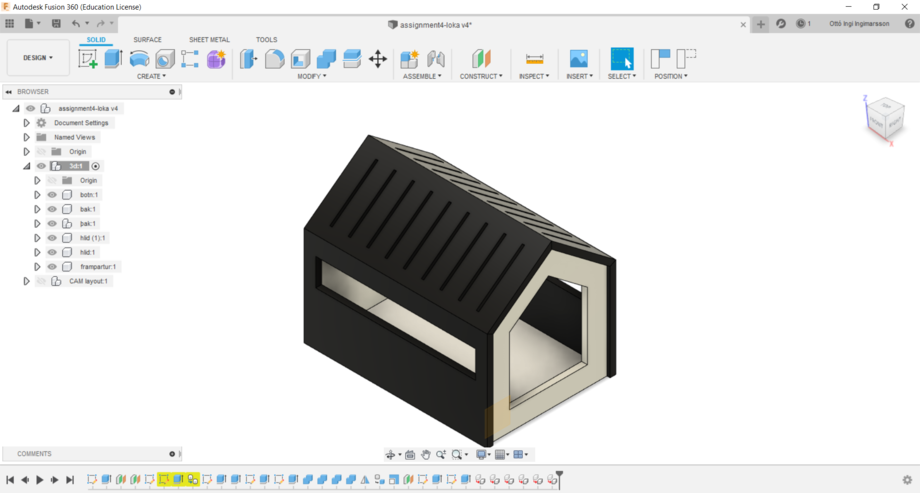
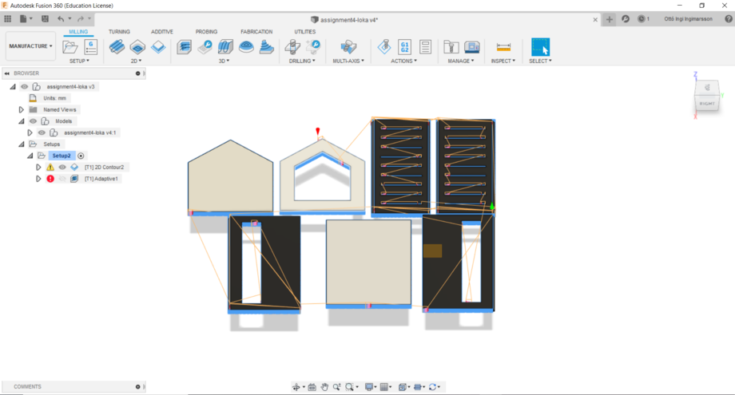

Making somthing big with the CNC
Below you will find a detailed description of the project process.
This project was worked on by Halldór Atlason, Ottó Ingi Ingimarsson and me. Below you can see a picture of the members of the group in the same order as they were mentioned.
The project:
1. Use a CAD software to build a model you can machine with the shopbot.
2. Test runout, alignment, speeds, feeds and toolpaths.
3. Assemble your invention.
We as a group are working on doing an 3D printer. Still we decided to pick this project because it we thougt it would be fun though it's not connected to our final project.
We found a nice cat house on Pinterest and saw it cost's $300 online. We thougt the plywood that was supposed to be used in this project would be just as relevant. The goal was to make a cat house that would be cheaper but based on the desing found on Pinterest.
First was to design the house in solidworks and define parameters. Length, height, depth and material thickness was defined as parameters.
Due to actuality we could not attend the lecture for learning on the ShopBot. FabLab is closed so we could not do the milling on the ShopBot. Though we followed this YouTube video and made a simulation of the milling. The only thing that couldn't be done was the deegres on the edges for the roof, it would need a little bit more researche to find out how to make that happen. Another solution would be to make it a pressfit design. But since we are not cutting it out we did'nt think it was neccessary.

The inspiration.
The design.
Ready for simulation. The only thing left after the simulation is to post.